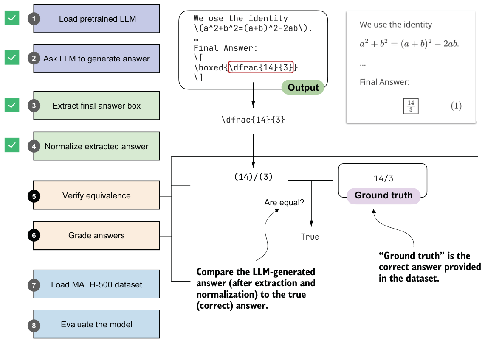

3.6Verifying mathematical equivalence
So far, we have implemented steps that ask an LLM to generate an answer, extract the relevant portion, and normalize it. The next step, as illustrated in figure 3.8, is to verify the extracted answer by comparing it to a correct reference answer, which in technical contexts is referred to as the ground truth. We will use such a verifier again in chapter 6 to create a verifiable reward signal, and in later chapters we’ll use it to check whether our training changes improved our model.
Note that to implement the equality check shown in figure 3.8, a direct comparison using Python’s == operator is not sufficient, since expressions like "14/3" and "(14)/(3)" would not match, and equivalent but unnormalized fractions such as "(28)/(6)" and "(14)/(3)" would also be treated as unequal.
As part of our equality check, we’ll add an intermediate step: parsing the extracted, normalized answer with a symbolic math engine. For this, we’ll use the open source SymPy math library (https://sympy.org), which has been developed and tested over two decades and has become a staple of scientific computing in Python. The parsing function is implemented in listing 3.7.

from sympy.parsing import sympy_parser as spp
from sympy.core.sympify import SympifyError
from sympy.polys.polyerrors import PolynomialError
from tokenize import TokenError
def sympy_parser(expr):
if expr is None or len(expr) > 2000:
return None
try:
return spp.parse_expr(
expr,
transformations=(
*spp.standard_transformations,
spp.implicit_multiplication_application,
),
evaluate=True,
)
except (SympifyError, SyntaxError, TypeError, AttributeError,
IndexError, TokenError, ValueError, PolynomialError):
return NoneThis sympy_parser function takes an input expression, such as the normalized answers we extract from the LLM response, and converts it into a SymPy object that can be reliably compared for mathematical equivalence. To do so, it applies SymPy’s standard parsing rules, supports implicit multiplication (for example, 2y instead of 2 * y), and simplifies basic arithmetic (so 2 + 3 becomes 5).
Let’s see sympy_parser in action and apply it to a normalized answer candidate:
print(sympy_parser(normalize_text(
extract_final_candidate(model_answer)
)))This returns the fraction 14/3. Next, let’s try an unnormalized fraction:
print(sympy_parser("28/6"))Similarly, this returns 14/3.
Using sympy_parser, we can now implement the equality check function.
from sympy import simplify
def equality_check(expr_gtruth, expr_pred):
if expr_gtruth == expr_pred:
return True gtruth, pred = sympy_parser(expr_gtruth), sympy_parser(expr_pred)
if gtruth is not None and pred is not None:
try:
return simplify(gtruth - pred) == 0
except (SympifyError, TypeError):
pass
return FalseThe equality_check function in the preceding listing determines whether a model’s answer matches the ground-truth solution. It first looks for an exact string match, which is the simplest case. If the strings differ, it parses both expressions into SymPy objects (via the sympy_parser function we implemented in listing 3.7) and checks whether their difference simplifies to zero. This lets us recognize answers that may look different on the surface (for example, 14/3 and 28/6) but are mathematically the same.
Let’s try the equality checker from listing 3.8 on an example:
print(equality_check(
normalize_text("13/4."),
normalize_text(r"(13)/(4)")
))As intended, this ignores the formatting and returns True. Next, let’s try a more challenging example and see whether the symbolic math parser recognizes that 0.5 is the same as 1/2:
print(equality_check(
normalize_text("0.5"),
normalize_text(r"(1)/(2)")
))This also returns True. Now, let’s try a negative example:
print(equality_check(
normalize_text("14/3"),
normalize_text("15/3")
))This returns False, since the expressions are different.
So far, so good. Based on these encouraging results, we might conclude that we now have a robust equality checker that we can use to evaluate the LLM on a math benchmark dataset. To make sure it’s ready for prime time, let’s try one more example:
print(equality_check(
normalize_text("(14/3, 2/3)"),
normalize_text("(14/3, 4/6)")
))In this case, we are comparing two tuples. Since 2/3 and 4/6 are mathematically equivalent, we would expect the result to be True. Instead, the function returns False because it currently handles only simple expressions, not tuples. We will address this limitation in the next section.